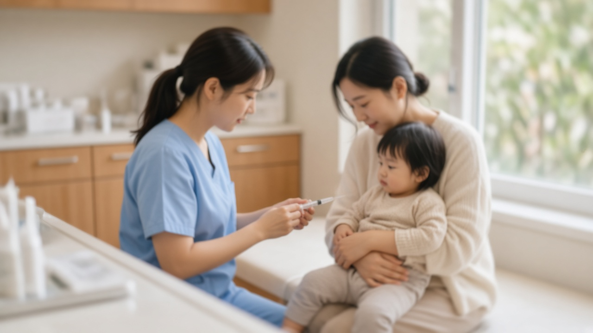
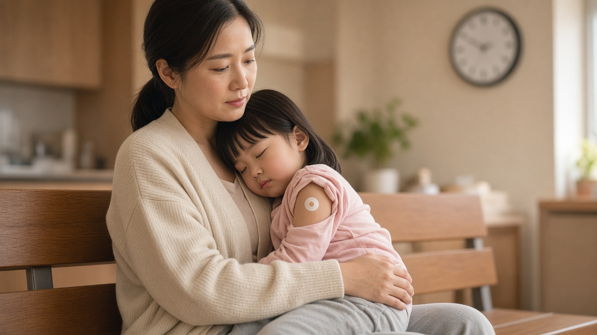

고위험군 아이 코로나19 백신 11월 11일부터, 생후 6개월에서 11세 접종 대상과 횟수 정리

아이가 항암치료를 받고 있거나 장기이식 뒤 면역억제제를 먹고 있다면 겨울만 되면 감염 걱정이 커지실 거예요. 그동안 12세 미만 아이에게 맞힐 수 있는 코로나19 백신이 국내에 허가된 것이 없어서 마음만 졸이던 보호자분들도 많으셨을 텐데요. 질병관리청이 11월 5일 고위험군 소아와 영유아를 위한 코로나19 국가예방접종을 11월 11일부터 시작한다고 밝혔어요. 누가 대상인지, 몇 번 맞아야 하는지, 병원에 갈 때 무엇을 챙겨야 하는지 차례로 정리해 드릴게요.
11월 11일부터 무엇이 달라지나
이번 접종은 생후 6개월부터 11세까지의 고위험군 아이를 위한 무료 국가예방접종이에요. 접종 기간은 2026년 11월 11일부터 2027년 4월 30일까지이고요.
배경을 보면 12세 미만에게 국내에서 허가나 승인을 받은 코로나19 백신이 없었어요. 그래서 질병관리청이 10월 28일 소아와 영유아용 모더나 XFG 백신을 긴급 도입했고, 이 백신으로 접종을 진행해요.
12세 이상 면역저하자와 65세 이상 어르신은 이미 10월부터 이번 절기 접종이 시작됐으니, 이번 발표는 그동안 빠져 있던 어린 연령대를 채우는 조치라고 보시면 돼요.
우리 아이가 대상인지 확인하는 기준
대상은 접종 당시 생년월일 기준으로 생후 6개월에서 11세인 아이 가운데 면역저하자, 그리고 감염취약시설에 입원하거나 입소해 있는 아이예요.
면역저하자 기준은 나이에 따라 달라요. 생후 6개월에서 4세는 혈액암 등으로 항암치료 중이거나 면역억제제 치료를 받는 경우, 장기이식 환자, 중증면역결핍질환이나 HIV 감염, 고용량 스테로이드를 14일 이상 쓰는 경우가 해당해요. 여기에 만성폐질환, 만성심장질환, 만성간질환, 만성신질환, 신경근육질환이 있는 아이와 중증뇌성마비나 다운증후군처럼 일상생활에 자주 도움이 필요한 아이도 포함돼요.
5세 이상은 범위가 조금 좁아요. 종양이나 혈액암으로 항암치료 중인 경우, 장기이식 뒤 면역억제제를 먹는 경우, 조혈모세포 이식 뒤 3년 이내이거나 3년이 지났어도 면역억제제 치료를 받는 경우, 일차 면역결핍증이 있는 경우 등이에요.
목록에 딱 맞지 않더라도 이에 준하는 면역저하 상태라서 접종이 필요하다고 의사가 판단하면 접종할 수 있어요. 그러니 애매하다면 아이를 진료하는 주치의에게 먼저 물어보시는 게 가장 빨라요.
몇 번 맞아야 하는지는 접종 이력이 결정
가장 헷갈리는 부분이 접종 횟수예요. 한 번 맞고 끝나는 게 아니라 예전에 맞은 기록에 따라 달라지거든요.
코로나19 백신을 한 번도 맞지 않은 아이는 4주에서 8주 간격으로 2회를 맞아 기초접종을 먼저 끝내야 해요. 이전에 일부만 맞은 아이는 남은 횟수만큼 1회에서 2회를 더 맞고요. 예를 들어 생후 6개월에서 4세 아이가 예전에 화이자 백신을 1회 맞았다면 이번 백신을 2회, 2회 이상 맞았다면 1회 맞는 방식이에요.
기초접종을 이미 마친 고위험군 아이는 매년 1회, 면역저하자는 매년 2회 맞아요. 접종 사이 최소 간격은 3개월이에요. 아이 예방접종 기록은 예방접종도우미 누리집에서 확인할 수 있으니 병원에 가기 전에 한 번 열어 보시면 상담이 훨씬 수월해요.
병원 가기 전 챙길 서류와 접종 뒤 주의할 점
접종하러 갈 때는 대상자임을 확인할 수 있는 서류가 필요해요. 의료기관 진단서나 소견서, 감염취약시설에 있다면 시설 입소 확인서를 챙기시면 돼요. 다만 접종하는 의사가 면역저하자로 판단하면 서류 없이도 맞을 수 있어요.

접종할 수 있는 병원은 예방접종도우미 누리집에서 예방접종관리 메뉴의 위탁의료기관 찾기로 확인할 수 있어요. 모든 병원에 소아용 백신이 있는 건 아니니 미리 전화로 백신이 있는지 물어보고 가시는 걸 권해요.
접종 뒤에는 병원에서 20분에서 30분쯤 머물며 이상반응이 없는지 지켜보고, 집에 와서는 충분히 쉬게 해 주세요. 열이 오래가거나 평소와 다른 증상이 보이면 바로 의료진과 상의하시고요.
보호자가 함께 알아 두면 좋은 것
이번 접종은 무료지만 대상이 고위험군으로 정해져 있어서 건강한 일반 아이는 해당하지 않아요. 같은 기간 인플루엔자 무료접종은 생후 6개월에서 14세까지 받을 수 있으니, 고위험군 아이라면 두 접종 일정을 주치의와 함께 짜 보시면 좋아요.
어르신 접종 참여율도 참고해 볼 만해요. 질병관리청에 따르면 11월 4일 오후 6시 기준 65세 이상 코로나19 접종자는 약 391만 명으로 해당 연령의 34.2퍼센트였어요. 집에 고위험군 아이와 어르신이 함께 있다면 가족 모두의 접종 일정을 한 번에 점검해 두시는 게 좋겠어요.
오늘 내용은 11월 5일 기준 질병관리청 발표를 정리한 일반 정보예요. 아이마다 상태와 접종 이력이 다르니 실제 접종 여부와 횟수는 꼭 담당 의사와 상담해서 정해 주세요.
참고 자료 질병관리청 2026년 11월 5일 보도참고자료 고위험군 소아 영유아 코로나19 국가예방접종 시작 안내, 예방접종도우미 누리집 2026 2027절기 코로나19 국가예방접종 사업 안내, 연합뉴스 2026년 11월 5일 보도
태그 코로나19예방접종 소아코로나백신 영유아코로나백신 고위험군접종 면역저하자 모더나XFG 국가예방접종 예방접종도우미 질병관리청 소아면역저하